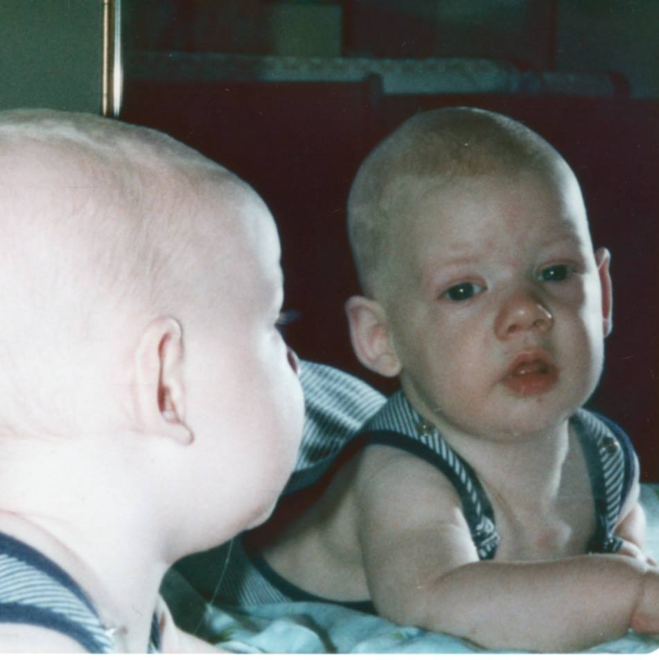

- Patagonia R1 hoodie
- I've wanted one of these ever since Andy Kirkpatrick raved about it but they stopped making it for a while. It has really long arms so I can move about in it as much as I like.
- Inov8 Fastlift shoes
- These are my first pair of lifters so I don't have much to compare them to. I'm pretty happy with them though. and I seem to be able to run in them quite hapily.
- Shaker
- I got this for free with my first ever protein powder tub. I've got quite a lot of these now, but this one has some strange sentimental value. It's not very good!
- Protein powder tub
- This is full of some cheap chocolate stuff that our last housemate left behind.
- Patagonia Refugio bag
- I bought this on Amazon and I didn't know that this was going to be so pink, Irina calls it my 'big pink vagina bag'. It's got about a million internal pockets which drove me mad as my day to day bag, but is actually quite handy as a gym bag.
- Hotel towel
- I get towels on tap at work, and sometimes one comes home with me by accident.
- RX rope with spare cables
- I'm still terrible at double unders. I'm using the heaviest rope they do which makes my shoulders burn after about 10 rotations. I'm hoping that if I start heavy and slow it'll get better as I move down the weights. Hoping.
- UE charger
- Always carry a charger. This one is from my bluetooth speaker and is a nice bright colour so nobody will pinch it.
- UT Lab Tyvec wallet
- This is my backup wallet; I've lost my good one somewhere in the house. I really like thin wallets and I doubt you can get a wallet much thinner than this one.
- Timex Easy Reader

- Watches are something I've struggled to get into, but they seem like a grown up thing to have! As I don't have a phone I figured that it'd be good to know what the time is. This one is really simple and pretty cheap too.
- Paint marker
- I'd forgotten that this was in here. It will write on most things, and is really good for windows and mirrors.
- Keys
- Er, it's my keys.
- What are you wearing right now?
- I've just finsihed a workout, so I've got my silver disco shorts, a purple Creature t shirt, cheap rio socks, and Inov8 210s.
- How long have you been doing crossfit?
- About 18 months I think
- What do you do as a job?
- Good question!
- Competition history
- I've done a few comps in the scaled division and come second in two of them. I guess that makes me second toughest in the infants. I'm a bit too fat to be hitting those heady numbers at the moment.
- What bit of kit would you use, even if you were sponsored by their competitor?
- I'm pretty ambivalent about all my gear, although I tried on a pair of nanos and my current Inov8s and I'm pretty sure I wouldn't want to wear nanos. I think that by the time I make it to The Games (in masters 95-100) it won't matter what shoes I'm wearing; comfy Reebok velcros to go with my velour tracksuit.
- What isn't in your bag that should be?
- I thought that there was some tape in there and some super glue. I also usually have a Nexus 7 tablet with me and some headphones. If I'm doing a long, slow row I'll listen to podcasts with it. I'm taking this photo with the tablet.
- Are you sponsored at all?
- No, I'm a privateer

{kind=link}